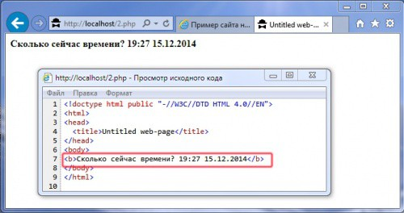
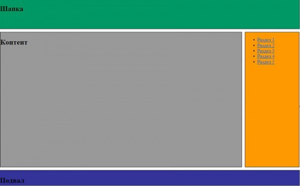
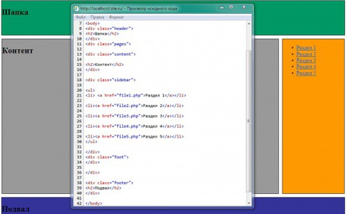
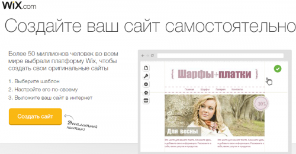

Как самостоятельно сделать сайт на PHP?
Перед тем, как сделать сайт на php, нужно предпринять меры предосторожности. Потому что ресурс может получиться крайне динамичным. Того и гляди, укусит!
Содержание
Сейчас эти две дисциплины связаны почти воедино. Их тандем является основой, на которой построена «жизнь» большей части интернета. Конечно, в связке с html применяются и другие серверные языки (Perl, ASP.NET). Но их распространенность во всемирной паутине по сравнению с PHP, носит чисто эпизодический характер.
Согласно статистике, архитектура большинства ресурсов в интернете построена на основе php и html.
Для многих начинающих взаимосвязь между этими технологиями выглядит непонятной. С одной стороны статический html, который интерпретируется браузерами на стороне клиента. А с другой — программный язык, обрабатывающийся на сервере. Поэтому, перед написанием сайта на php с нуля, приведем простой пример взаимодействия этих двух технологий:
<html>
<head>
<title>Untitled web-page</title>
</head>
<body>
<b>Сколько сейчас времени? <?php echo date("H:i d.m.Y");?></b>
</body>
</html>
Яндекс.Директ
Разработка сайтов в Ростове-на-ДонуДоработка сайта на Joomla

Как видно на скриншоте, строка <?php echo date(«H:i d.m.Y»);?> не отображается в html коде страницы. И в браузере, и в коде видны лишь возвращенные дата и время. А это значит, что скрипт был обработан на серверной стороне. Поэтому создание сайта на php кардинально отличается от написания простых html страниц.
Современные сайты бывают двух основных типов:
Код Java Script выполняется в браузере на стороне клиента.
Динамический сайт на php состоит из следующих файлов:
Кроме этого проект сайта может состоять из файлов, хранящих в себе код функций и методов php. А также включать в себя базу данных.
В большинстве CMS источником контента для наполнения страниц, динамически сгенерированных на стороне сервера, служит база данных. Чаще всего применяется СУБД MySQL.
Чтобы разобраться, как создается сайт на php, рассмотрим практический пример. Конечно, многое в нем упрощено, но весь механизм работы и этапы создания сохранены.
Имеется html сайт со следующей структурой и дизайном:

Его код:
<title>Пример сайта на php</title>
<link rel="stylesheet" type="text/css" href="style.css"/>
</head>
<body>
<div class="header">
<h2>Шапка</h2>
</div>
<div class="pages">
<div class="content">
<h2>Контент</h2>
</div>
<div class="sidebar">
<ul>
<li> <a href="file1.php">Раздел 1</a></li>
<li><a href="file2.php">Раздел 2</a></li>
<li><a href="file3.php">Раздел 3</a></li>
<li><a href="file4.php">Раздел 4</a></li>
<li><a href="file5.php">Раздел 5</a></li>
</ul>
</div>
<div class="foot">
</div>
</div>
<div class="footer">
<h2>Подвал</h2>
</div>
</body>
</html>
Код файла style.css:
margin-left:auto;
margin-right:auto;
margin-bottom:10px;
width:1000px;
height:100px;
border:1px solid #000000;
background: #009966;
background-image: url(img/1.gif);
}
.pages {
margin-left:auto;
margin-right:auto;
width:1000px;
}
.content {
margin-right:10px;
width:806px;
height:450px;
border:1px solid #000000;
background: #999999;
float:left;
}
.sidebar {
width:180px;
height:450px;
border:1px solid #000000;
background: #FF9900;
float:left;
}
.foot {
clear:both;
}
.footer {
margin-top:10px;
margin-left:auto;
margin-right:auto;
width:1000px;
height:50px;
border:1px solid #000000;
background: #333399;
}
Перед тем, как написать сайт на php до конца, весь html код нужно раскинуть по нескольким файлам:
Теперь создаем основную страницу index.php, в которой будут размещены вызовы файлов, содержащие в себе код нужных элементов дизайна. Итого в основном файле оказалось всего 3 строчки скрипта:
<?php
include("header.php");
include("content.php");
include("footer.php");
?>
А если просмотреть в браузере html код страницы, то вы увидите код первоначального исходника:

Конечно, этот вариант подходит лишь для генерации основной страницы сайта. Но если код боковушки убрать в отдельный файл, тогда шаблон можно использовать и для генерации внутренних страниц сайта.
Но такая разработка сайта требует затраты сил, наличия специализированного программного обеспечения и знаний. Поэтому хотелось бы найти более легкий вариант. Тогда следует воспользоваться конструктором php сайтов.
Они представляют собой определенный набор шаблонов с расширенным диапазоном настроек. Из-за чего они сильно схожи с обычными CMS. Конечно, высокой уникальности дизайна будущего сайта никто не гарантирует, и в дальнейшем могут возникнуть проблемы с переносом и адаптацией ресурса на другой хостинговой площадке или платформе. Вот несколько проверенных вариантов таких онлайн-сервисов:

С более подробным обзором популярных онлайн-конструкторов сайтов можно ознакомиться здесь. В интернете встречаются и десктопные версии конструкторов сайтов, но большая их часть платная.
Альтернативой таких онлайн-генераторов сайтов является использование CMS. По своей сути они тоже являются конструкторами сайтов.
Но генерация страниц ресурса происходит в них динамически. Наиболее популярные CMS:
Создание сайта с нуля на php подходит не для всех. А применение специализированных конструкторов не всегда дает ожидаемый результат. Поэтому оптимальным вариантом будет развертывание нового сайта на основе популярной CMS.